The Problem
Studies show lone parenting is increasing with higher rates of failed marriages or couples willing to have children without marriage,
then deciding to split.
With increased rates of Lone Parenting, a multitude of issues are arising.
Children are developing behavioural problems.
Children have increased responsibilities at home, responsibilities may be financial or just house work.
Responsibilities at home create a maturity complex from a younger age which can lead to clash outside home such as in educational institutions
with teachers.
Emotional troubles also arise for children who find it difficult to accept parent's dating life.
Children have to adapt to living with parents seperately, this can cause mental strain.
Issues regarding parental guidance also arises as living seperately with two parents opens up space for a lack of communication between the parents
and discordant opinions on how the child should be raised.
Aside from these issues, a more severe issue arises with the custody of children being generally given to their mothers. This has seen a significant rise in
suicide rates amongst single male parents.
Increase in Male Suicide Rates
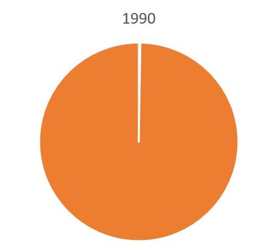
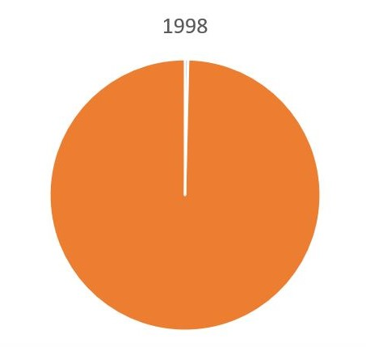
Maps retrieved from Australian Bureau of Statistics indicate that there are more single mothers living with children, than single fathers.
This backs up the data provided regarding increased suicide rates amongst male single parents.

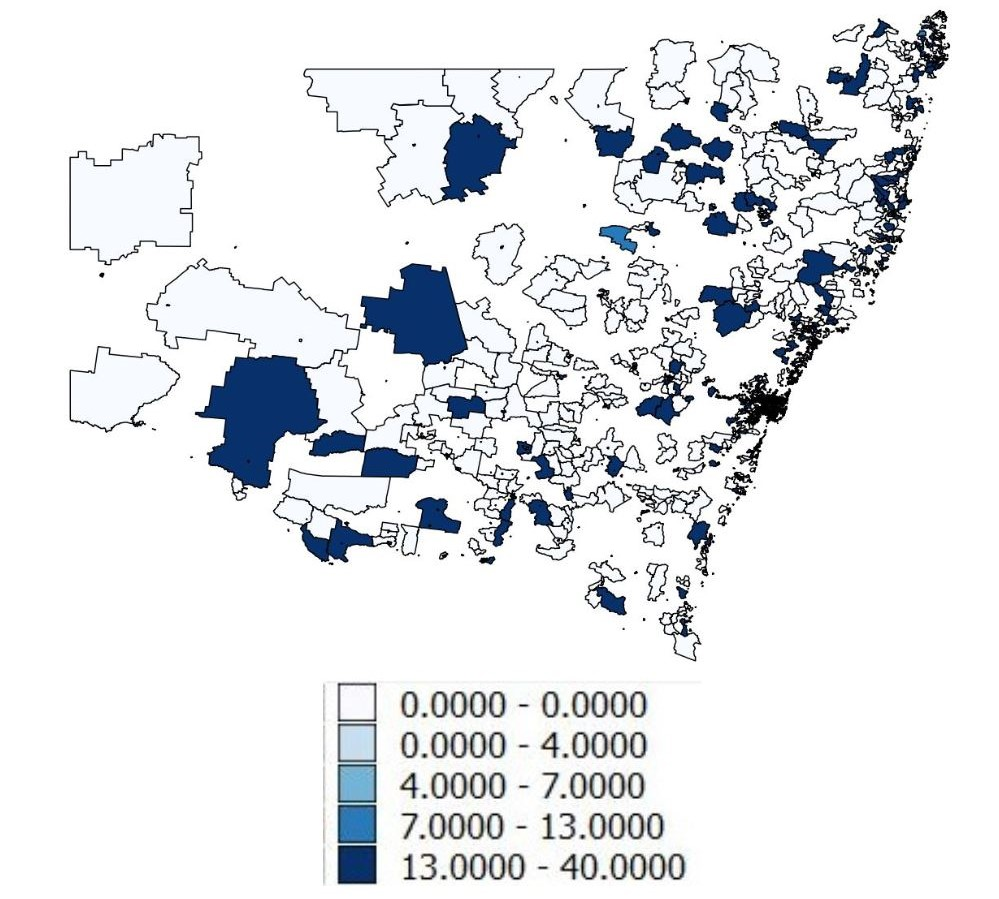
Solution to Lone Parenting Issues
Solutions to lone Parenting is a difficult task as there exists so many variables and human behaviour cannot be predicted or controlled. A small scale solution which may work
can be the prevention of parents living seperately even after a split.
A SHARED HOUSEHOLD could be proposed. This is a property with two houses and a common space. The two houses would belong or rented out to the two parents.
Children will not have to live seperately with either parents. Custody could be given to both parents as they would be sharing a property with a common space.
Depending on whether parents agree, the children may also enjoy spending quality time with both parents within the "Shared space". This proposal will ensure on solving all the issues
which arise with lone parenting while also assuring the parents have their own personal space to move on with their private lives.
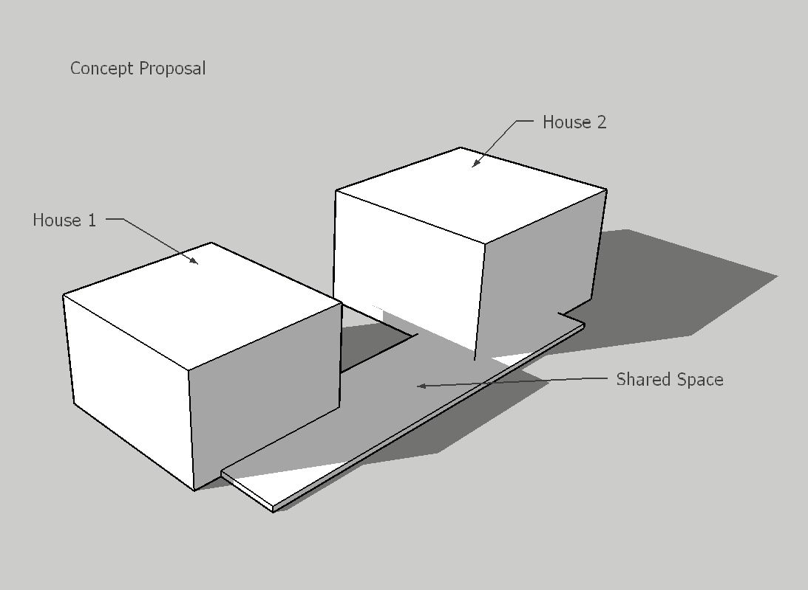
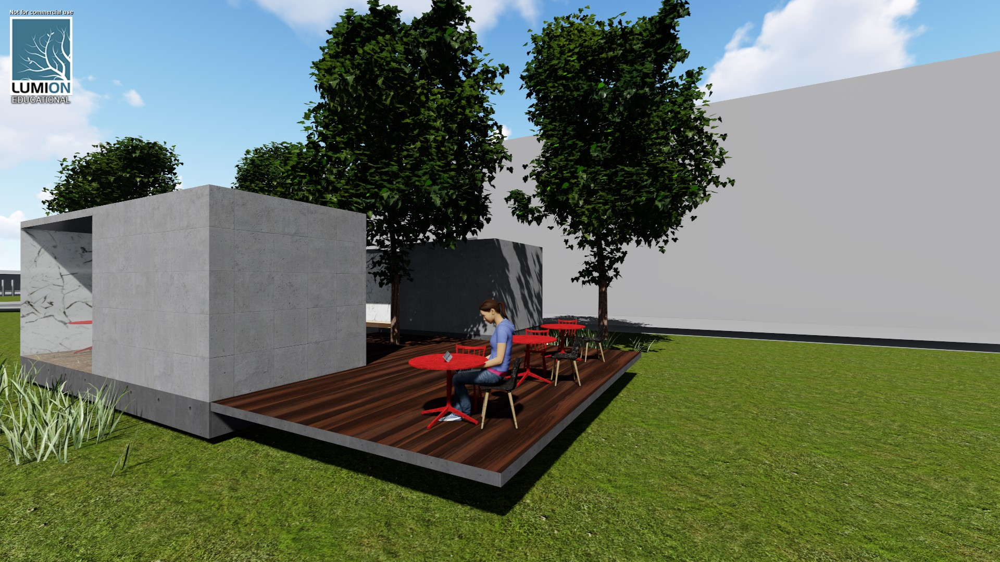
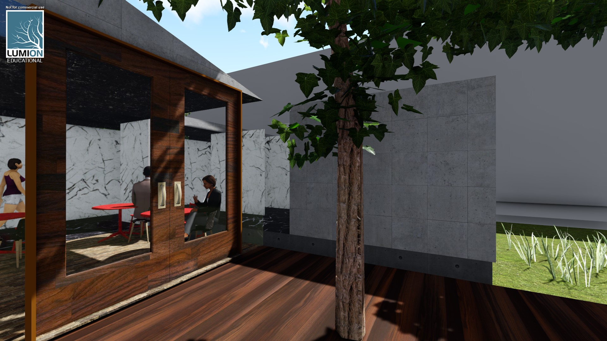
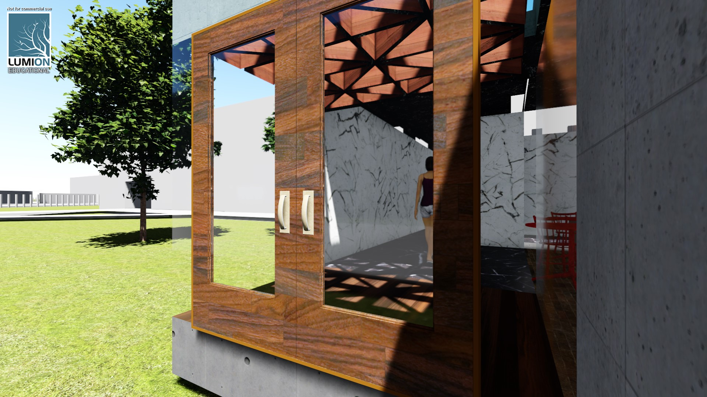
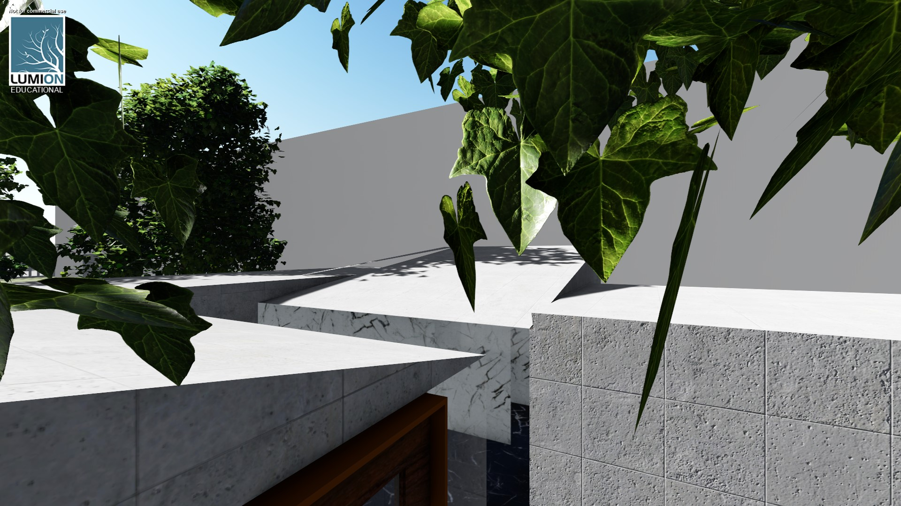
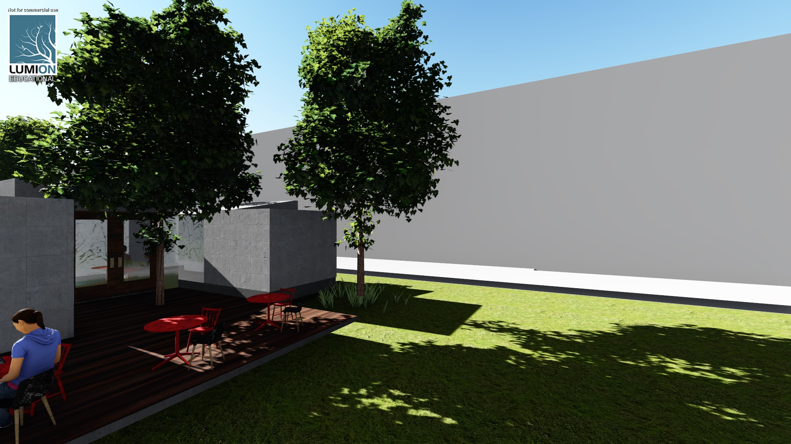
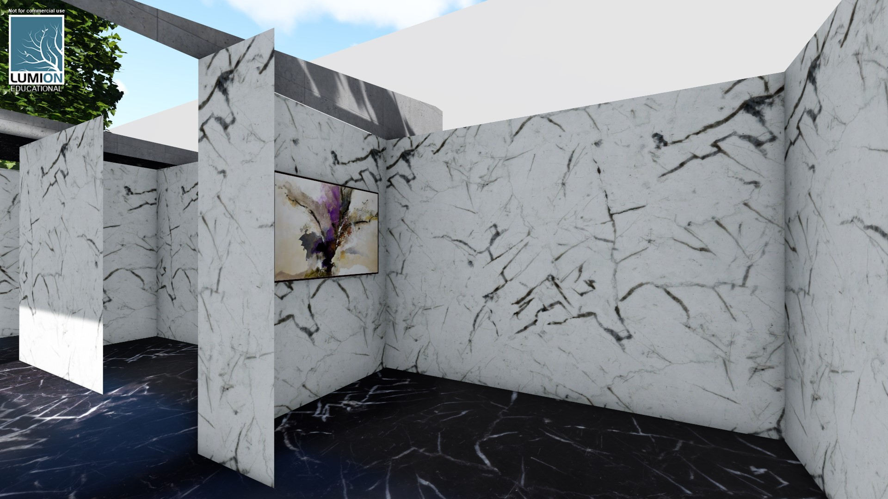
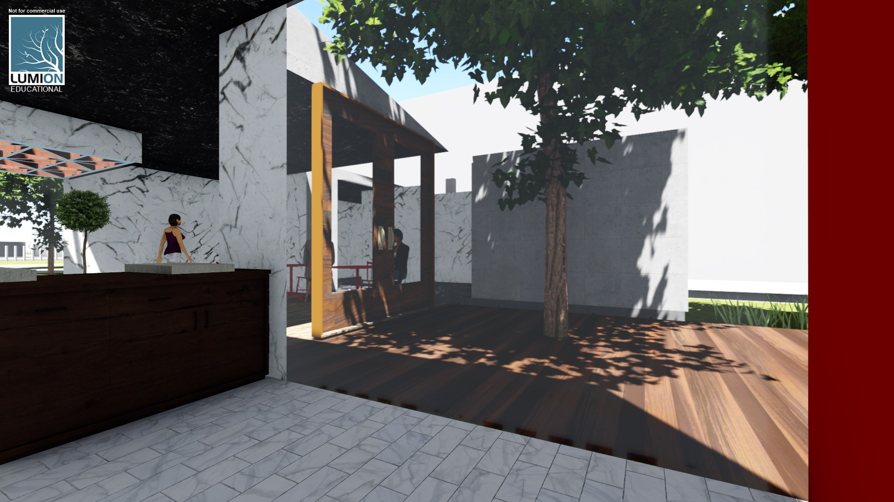
The solution can be extended to large scale by providing a support group for male parents who may not be able to afford the "Shared Household".
There is evidence that the suburbs at the heart of Sydney are more dense in lone parents population.
Choice of location was based on this data and Millers Point, a residential area in the heart of CBD was chosen to host the infrastructure for the support group. An infrastructure connected by bridges to
surrounding suburbs with more lone male parents.
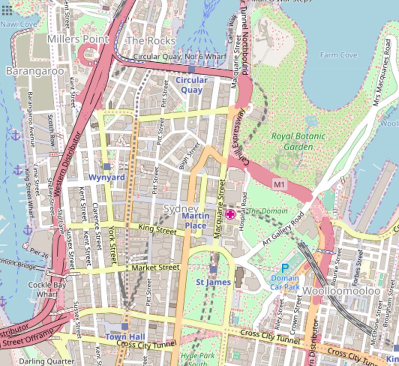
City Scale Solution to Lone Parenting in Sydney